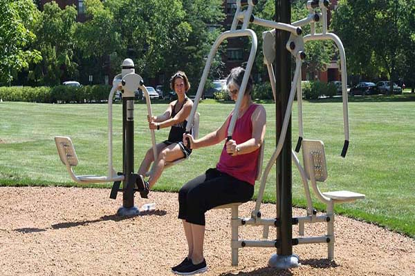
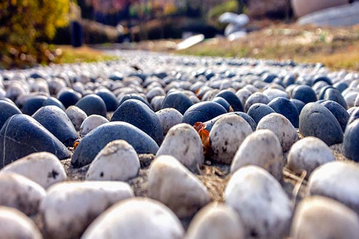

생활건강시설
- 
-
간이체육시설
올림픽공원 곳곳에는 조깅 또는 산책을 하다가 가볍게 이용할 수 있는 간이체육시설이 설치되어 있습니다. 산책로 주요거점을 중심으로 분산형과 집합형의 형태로 요소요소에 배치하여 체력단련을 위한 코스로 활용하실 수 있습니다. 건강한 정신은 건강한 신체에서 나온다는 말처럼, 자연이 숨쉬는 올림픽공원에서 건강한 몸과 마음을 만들어 가시기 바랍니다.
- 
-
건강지압로
올림픽공원에 건강 지압로가 조성되어 내방객들의 큰 호응을 얻고 있습니다. 공원 내 평화의 광장 좌측 느티나무 하단부에 위치한 지압로는 총연장 53.4m의 태극문양 순환형으로 조성되었으며, 특히 중앙부에는 타 지압로와는 다르게 황토볼을 이용해 지압공간을 설치, 지압효과가 탁월한 것으로 알려졌다. 또한 2006년 생활체육공간으로 리노베이션한 만남의 광장에는 길이 150m 구간에 직선형태의 건강지압로가 조성되어 있습니다.